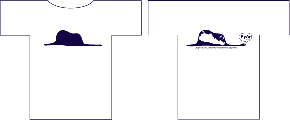
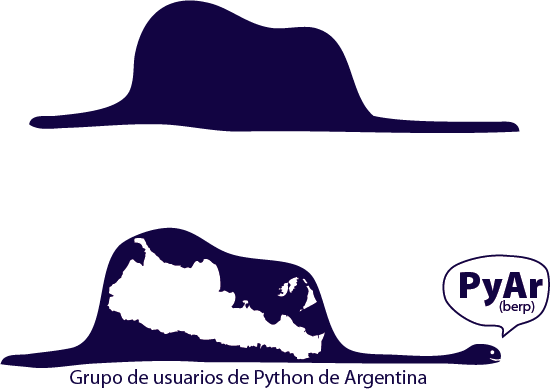

Volver a RemerasV2
Una remera con explicación para personas grandes
http://www.franciscorobles.com.ar/libros/principito/pag01.htm Un solo color es suficiente. (nota: la tipografía usada en el svg es ligéramente diferente de las imágenes que se muestran, la tuve que modificar para cumplir con las reglas del concurso).
Detalle:
Archivo
Comentarios
dieresys: Me gusta mucho la parte de atrás. La parte de adelante la prefiero clásica, con un "PyAr" en donde iría la escarapela. También pondría la dirección de la web en algún lado, tal vez abajo de todo de la parte de atrás.
PabloZiliani: Personalmente creo que uno no tiene sentido uno sin el otro. Con lo de escarapela creo que te referís a la "solpiente" del diseño anterior. Desgraciádamente no creo que pueda hacerlo por falta de tiempo, pero ahora que subí los archivos vos mismo podrías derivar arte de esto.